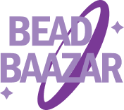

Bead Baazar es tu aplicacion ideal para encontrar pulseras, anillos, collares, joyeria y demas accesorios de la mas alta calidad que te llevaran expresar tu personalidad unica ante las personas, esto graccias a nuestra calidad, experiencia y diseños variados.
Nuestra aplicacion fue creada mediante el uso de tecnicas que mejoran la experiencia de usuario y fue creada bajo framework 7 teniendo al lenguaje HTML, CSS y javascript como sus principales herramientas. Nuestros principales diseñadores siendo:
Edwin Murillo
Kory Montufar
Sofia Cabrera